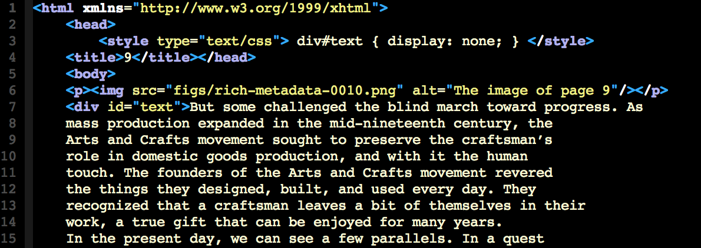
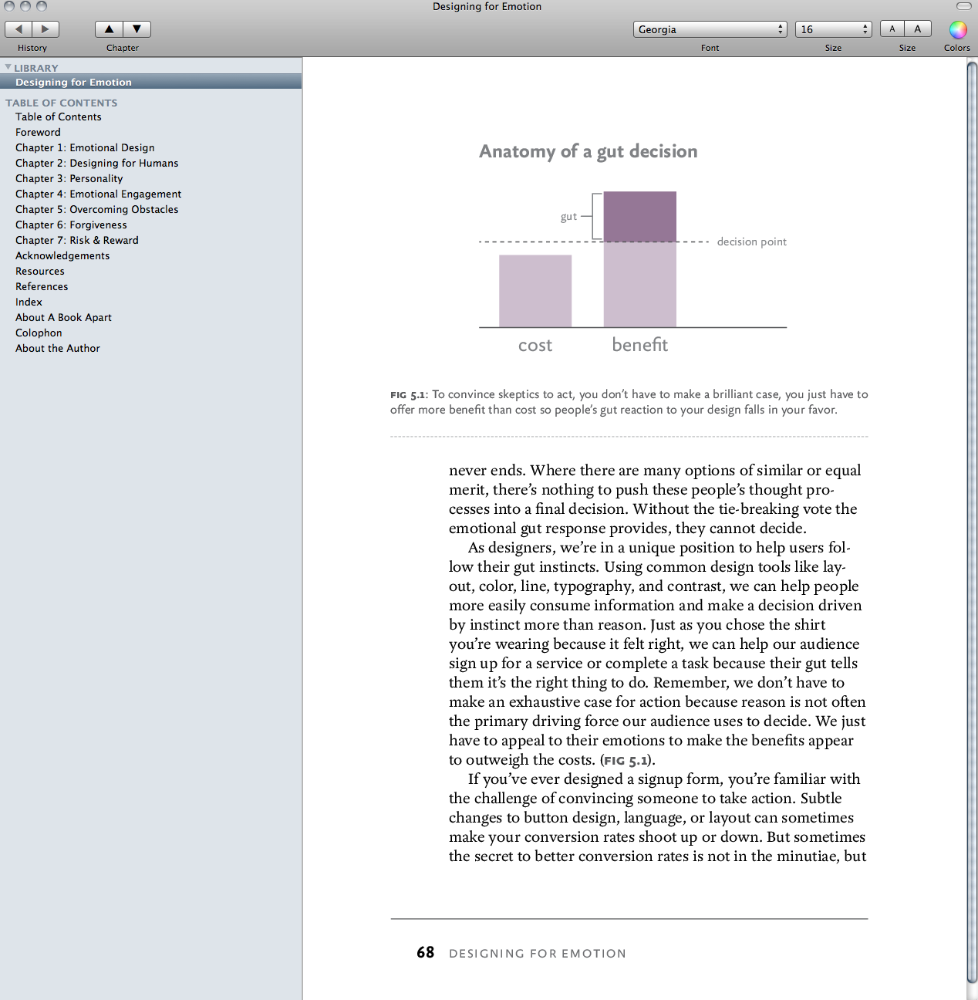
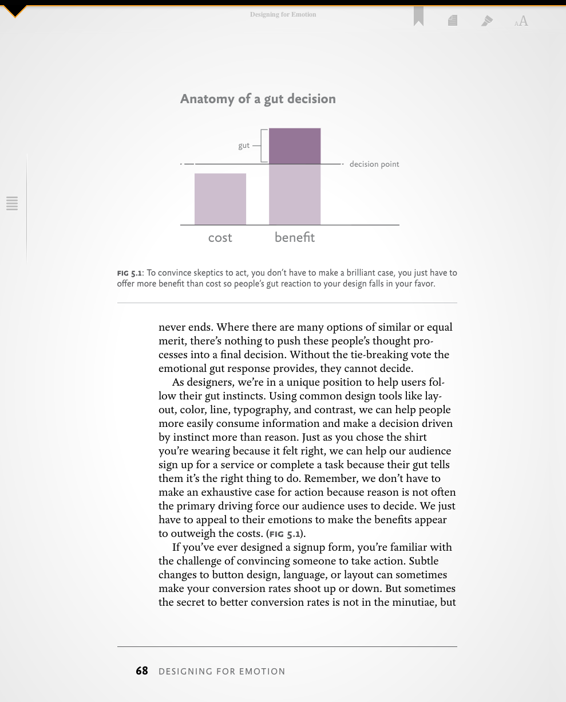
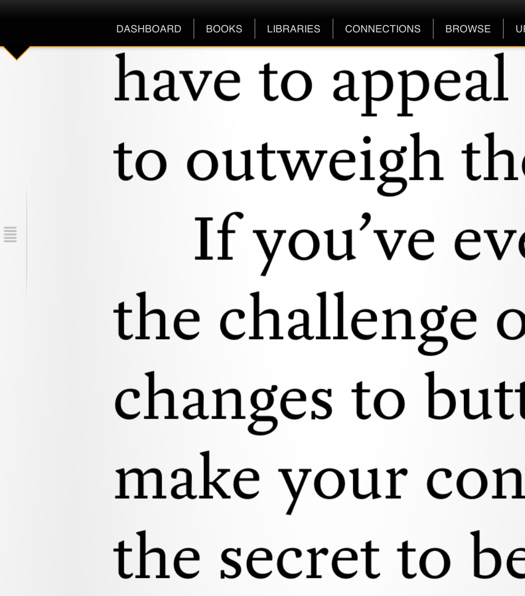
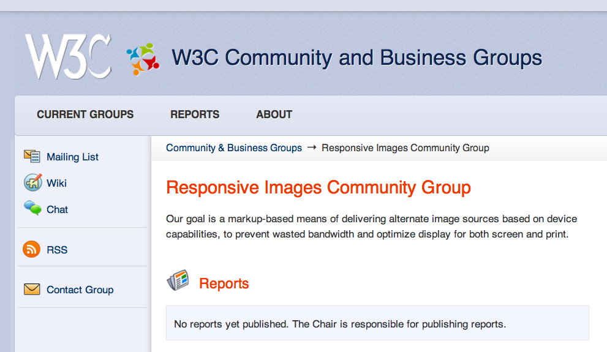

Streaming Digital Books
Liza Daly · @liza
EPUB defines a means of packaging content “for distribution in a
single-file format.”
- Files are portable.
- Files can be bound together in containers.
- Files can be endlessly reproduced.
(If you’re a publisher,
maybe you don’t really
like files so much.)
An explicit goal of the EPUB format is that the same file that
leaves the publisher's "book factory" is the one that ends up in
consumers' hands. I don't think this is always a feature.
 peacay
peacay
Why does this need to be true?
What if we stop thinking about the ebook as being primarily about the package and more about its manifest?
The ebook package doesn't have to be the book itself. It's a set of instructions on how to build the ebook. It's a recipe.
Ingredients
- Images
- Spoken tracks
- Alternate language version
- Simplified summary
- HTML5/CSS3 markup and styling
- Do you want images?
How big?
- I have some audio.
Would you like to hear it? What formats can you use?
- Do you want it to be synchronized with the text
or just play it by itself?
- This is a new edition. Do you want to review the changes
or just read the new version?
- Do you speak Spanish? Do you speak both English and Spanish? Are you learning Spanish?
- This is a difficult topic. Do you want the easy version first?
- Is your ereader old or new?
A gentler workflow
- Ebook "manuscript"
⤑
- Content negotiation
⤑
- Streaming book
1. Take everything we know about the book.
Package it in an EPUB.
2. Content negotation.
“I'd like French most, but I'll also accept English as a fallback.”
 «Trés bien.»
«Trés bien.»
HTTP as she is spoken
Accept-Language: de; q=1.0, en; q=0.5
Accept: text/html; q=1.0, text/*; q=0.8,
image/gif; q=0.6, image/jpeg; q=0.6,
image/*; q=0.5, */*; q=0.1
Negotiate first at the
document level
Accept: application/xml+epub3,
application/xml+epub,
text/plain,
application/pdf
...then talk about content types
Accept-Language: fr, en
Accept: application/xml+mathml,
application/xml+svg,
application/xml+html
3. Streaming book
Just what the reader wants, as fast as possible.
Mockingbird converts PDFs into an EPUB container
(not an EPUB!)
What does mockingbird know about a book?
- What the pages look like.
- The extractable text from the PDF.
- The PDF's table of contents.
- External metadata.
Injected full text for search.


<container xmlns="urn:oasis..." version="1.0">
<rootfiles>
<rootfile full-path="OEBPS/content.opf"
media-type="application/oebps-package+xml"/>
<rootfile full-path="OEBPS/rich-metadata.pdf"
media-type="application/pdf"/>
</rootfiles>
</container>
(This syntax is deprecated.)


What do we get out of a streaming/manuscript model?
Intelligent rights management
- Control over portability
- Timed revocation
- Granular rights management
Responsive asset management
- Future-proof images
- Single-format media
- Multipurpose titles
- Supplementary glossaries, dictionaries, indexes
Flaws in the current model:
- Retailers and ereaders aren't actually required to follow the spec.
- Additional restrictions are allowed.
- Responsive design can be resource-wasteful.

TODOs
- An "EPUB" should be an API endpoint, not only a file
- Worked examples with content negotiation
- More streaming business models
Credits
Liza Daly · @liza · liza@safaribooksonline.com